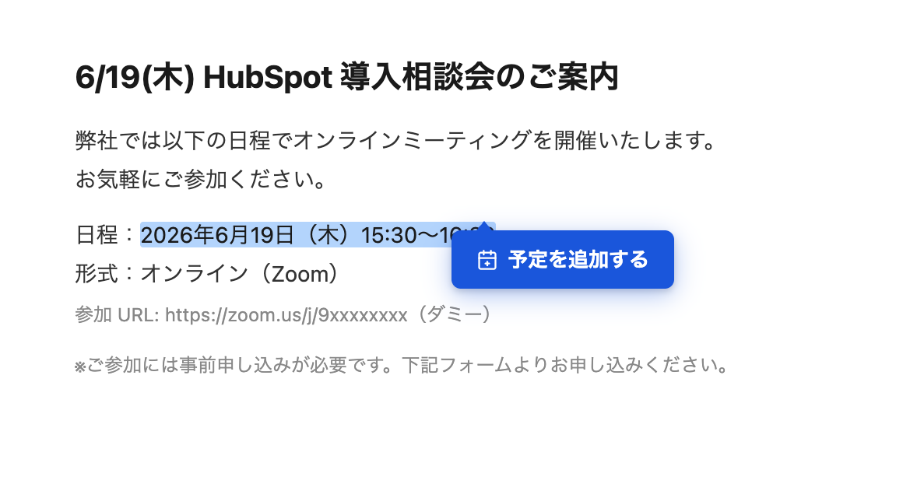
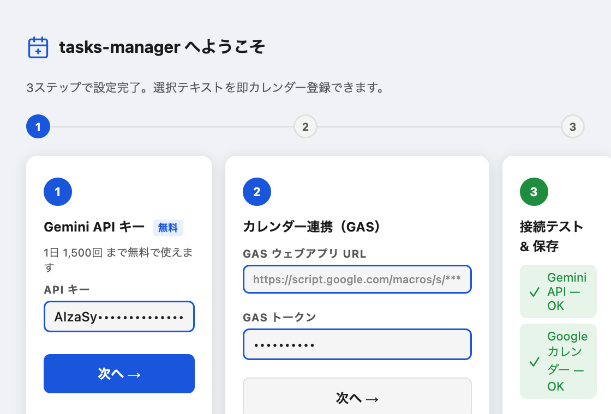
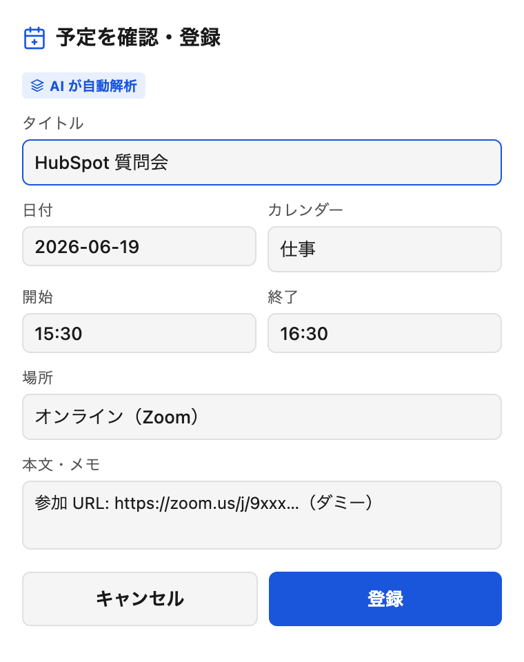
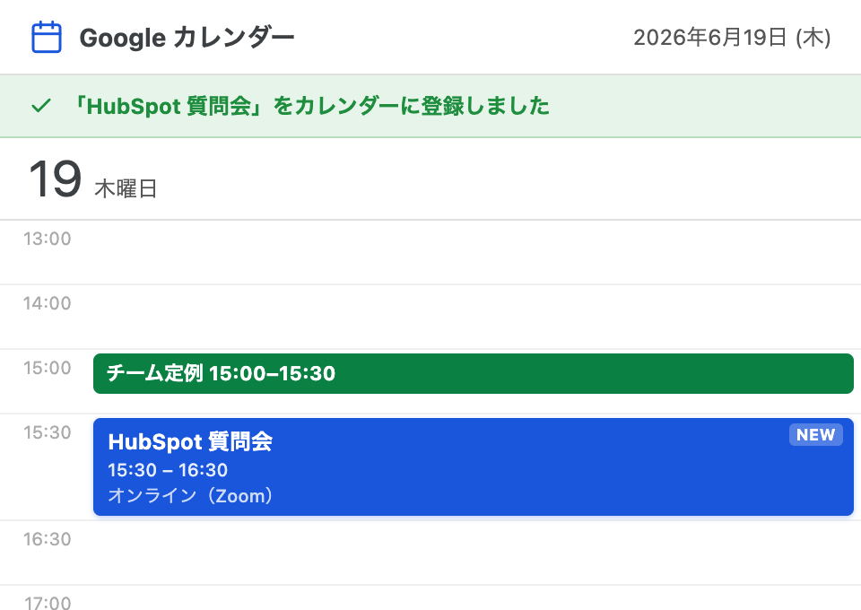

メール・Slack・LINEの文章を選ぶだけ。
AIが日時・場所を自動で読み取り、Googleカレンダーに登録します。
コピー&ペーストも手打ちも、もう不要。
Gemini API 無料枠で 1日 1,500回まで利用可能

なぜ tasks-manager?
Chrome上はもちろん、MacのSlack・LINE・ターミナルなど、どのアプリでも選択→登録できます。
日付・時刻・場所・タイトルをGemini AIが自動で抽出。曖昧な表現や「来週月曜」も正確に変換します。
Gemini API の無料枠で1日1,500回まで使えます。クレジットカード不要。インストール3分。
使い方
インストール直後に開くウィザードで3ステップを完了します。
① Gemini APIキー（無料取得）
② Google カレンダー連携（GAS）
③ 接続テスト & 保存
一度設定すれば、次回から何もしなくて大丈夫です。

ブラウザ上で予定が書かれた文章を選択すると、
「予定を追加する」ボタンが自動で出現します。
選択して1秒待つだけ。他の操作は何もいりません。
ボタンをクリックするとポップアップが開きます。
AIが日時・場所・タイトルを自動で入力済み。
内容を確認・修正して「登録」を押すだけです。

登録ボタンを押したら、Googleカレンダーに即反映。
スマホのカレンダーアプリにも自動で同期されます。
コピー＆ペーストは、もう必要ありません。

対応環境